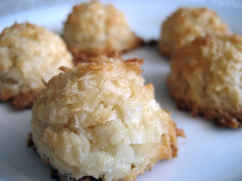
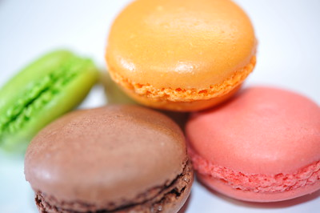
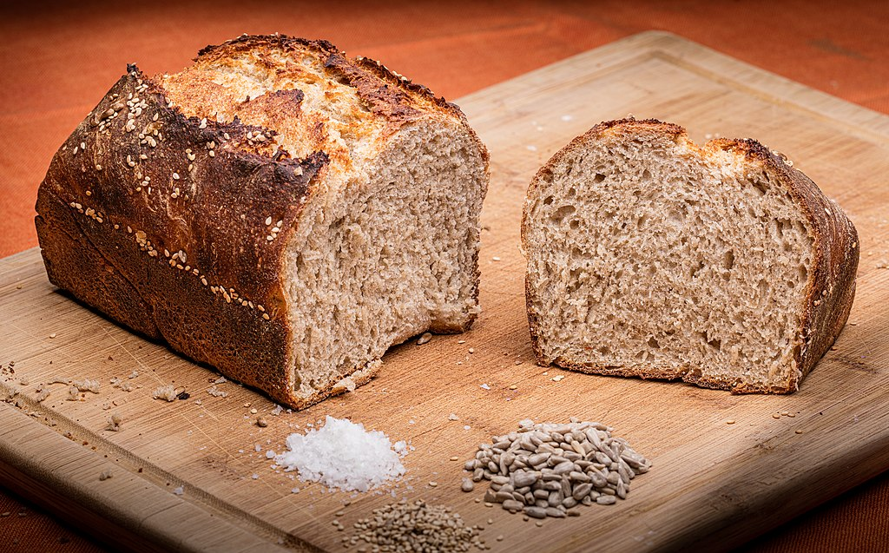

Introduction
While most bakery items and pastries have their distinct flavor, people still mix some of them up for their names or appearance. Here, you will learn about the main difference between commonly confused baked goods. In addtion to this, you can view recipes for each item by clicking the title of each good.
Macaroons vs Macarons
Macaroons
"coconut macaroon" by Stacy Spensley is licensed under CC BY 2.0.
Originating from Italy, a macaroon is a cookie made from egg whites, sugar, and nuts (coconuts, almonds, etc). Macaroons are easy to make and can be done in less than one hour. A macaroon is pronounced as mack-a-rue-n.
Macarons
"macaron" by kubotake is licensed under CC BY 2.0.
Also known as the French macaroon, a macaron is a cookie with a ganache, a buttercream or a jam filling with menringue cookies sandwiching the filling. Unlike macaroons, macarons usually takes more skills and time to prepare. Lastly, macaron is pronounced as mack-a-rohn.
Whole Grain Bread vs Whole Wheat Bread
Whole Grain Bread
"home made whole grain bread" by Tomascastelazo is licensed under CC BY-SA 4.0.
Made with a mixture of urefined grains (wheat, corn, rice, and more), whole grain bread preserves all parts of a kernel of the grain, allowing the bread to be rich in fiber and nutrients, like iron and potassium. This bread is more healthier than whole wheat and multigrain bread (which containes refined grains, removing a significant amount of the nutrients and fiber from the bread).
Whole Wheat Bread

"whole wheat bread" by Stacy Spensley is licensed under CC BY 2.0.
Being a type of whole grain bread, whole wheat bread is comprised of just wheat, rather than a mixture of other grains. While whole wheat bread is rich in fiber and nutrients, whole grain is considered healthier as it has a variety of grains, allowing the bread to be more packed with nutrients.